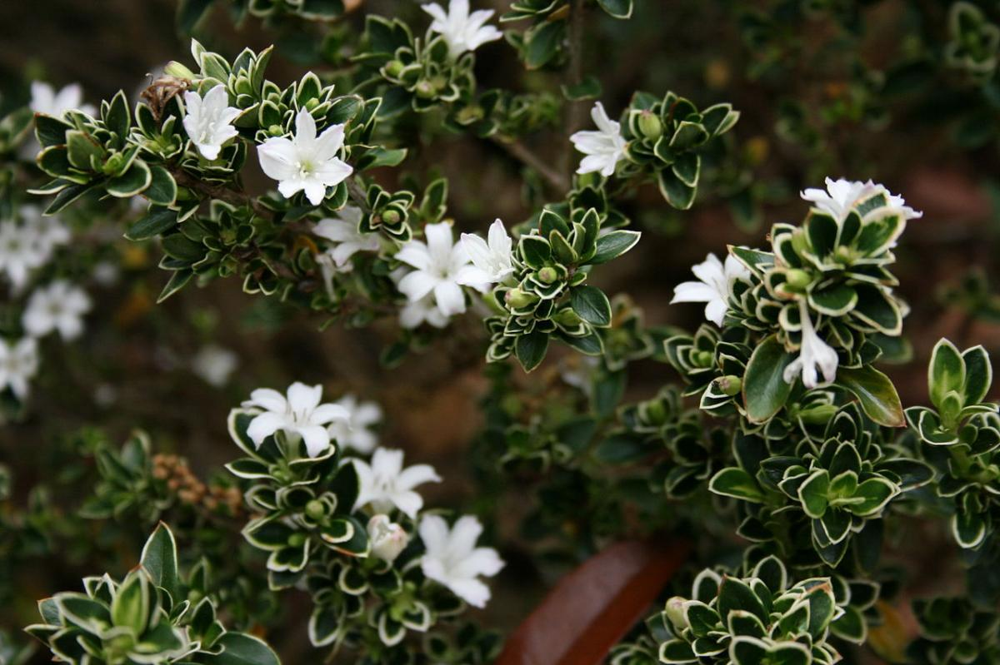

|
Lithops |
Africa |
Riego una vez cada 15 dias si el sustrato se enccuentra seco, o cuando esta se encuetre deshidratada. |
Su reproduccion es por polinizacion. |
 |
Biophytum |
India |
De riego constante ya que pertenece a zonas humedas y de sombra. |
Su reproduccion es asexual, por lo cual de una sola planta puedes tener en poco tiempo
una gran cantidad de ellas. |
 |
Bruma |
Sur America |
De ambientes humedos y bien sombreados, existen dos clases, una de ellas grande llegando
hasta los 3 metros, y otra mas pequeña alcanando un maximo de 15cm aprox. |
Su reproduccion es a partir de semillas de una forma redonda y oscura. |
 |
Euonymus Japonicus |
Originario de Japón,Corea y China |
Es una planta de exteriores la cula necesita de muy buena luz,
de constante riego y puede llegar a alcanzar de 5 a 6 metros de altura. |
Su reproducccion es muy facil a partir de pequeños esquejes, estos pueden ser sembrados
directamente en un lugar donde el suelo sea bien drenado. |
|  |
Serissa Japonica |
De origenes subtropicales, de bosques y prados húmedos del sureste
de Asia, de India y China a Japón. |
Es un arbusto perenne que alcanza los 45-60 cm, necesita de muy buena luz
y sol directo, no resiste las bajas de temperatura y necesita riego para
que el sustrato nunca este seco. |
Su reproduccion es dada a partir de pequeños esquejes de la misma planta. |
 |
Suculentas |
Se encuentran en casi todos los paises y comprenden tambien los cactus,
son muy referentes de terrenos aridos. |
Son de especial cuidado ya que no se pueden mantener en sustratos muy humedos
y por mucho tiempo ya que pueden dañarce sus raices al ser de terrenos aridos.
|
Pueden reproducirse a partir de semillas y esquejes dependiendo del tipo de planta. |
 |
Titanopsis |
Son de climas aridos y de gran distribución. |
Solo se recomienda el riego cuando su sustrato se
encuentra seco del todo ya que sus raices son sucptibles
a la humedad constante y se pueden podrirse rapidamente. |
Su reproduccion es a partir de semillas fecundadas. |